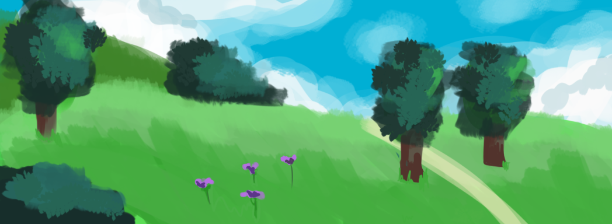

VILLA, Virtual Immersive Language Learning Application
VILLA is a VR language learning RPG built in Unreal Engine 5.
A problem with learning a new language is that the people around you may not speak that language aside from an educational setting, and you may not be able to use it in a casual scenario while not feeling self conscious about the way you speak. What if we could transport you to a different world where you could speak and practice this new language without feeling judged, and also have some fun? VR is often praised for its immersive qualities and would be a great solution for language immersion in a safe environment. Players would be transported into a new world as a character in a community setting, where they would have to navigate the social challenges of speaking in a different language. Players would do quests for the community to progress the story, which would involve practicing this new language. Throughout this experience they will learn this new language through interaction with items in the game, conversations with NPCs, and progression through different quest lines.Our game would use Unreal plugins for natural language processing to choose between different dialogue options and enable us to evaluate how the player is progressing. Our target audience would be schools, teachers, and people who just want to learn a new language.
Current language available: Japanese.
Click here to view the official development log!
Concept art: